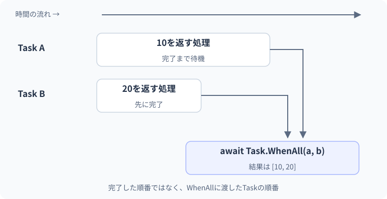

24 複数タスクとキャンセル — 詳細解説
独立した処理を開始して合流する。
図解：独立した処理を開始して合流する

複数の処理を始める前に依存関係を確認する
処理Bが処理Aの結果を必要とするなら、Aの完了後にBを始めます。一方、別々の資料を読むなど互いに依存しない処理なら、両方を開始してからまとめて待つことができます。並行化の目的は独立した待ち時間を重ねることであり、全てを同時に実行することではありません。
キャンセルは「もう結果が必要ないので、中止してよい場所で止まってほしい」という要求です。外から安全性を無視してスレッドを強制停止する機能ではありません。要求する側、要求を伝えるもの、要求を確認する処理を分けます。
最小例：開始してからWhenAllで待つ
Task<int> first = LoadAsync(10);
Task<int> second = LoadAsync(20);
int[] results = await Task.WhenAll(first, second);
Console.WriteLine(string.Join(",", results));
static async Task<int> LoadAsync(int value)
{
await Task.Delay(10);
return value;
}期待出力は10,20です。LoadAsyncを二回呼び出した時点で、それぞれの処理が始まります。WhenAllが各処理を初めて開始するわけではありません。Task.WhenAll<int>の成功結果の配列は、引数で渡したTaskの順序に対応します。どちらが先に完了したかの順ではありません。
| 書き方 | 開始の順序 | 向いている条件 |
|---|---|---|
| await A(); await B(); | A完了後にB開始 | BがAに依存する |
| a=A(); b=B(); await WhenAll(a,b); | 両方開始後にまとめて待つ | 独立した処理 |
| foreach内でawait | 一件ずつ進む | 順序や負荷制限を優先 |
| 件数を制限して同時開始 | 一定数まで重ねる | 外部APIや資源を保護 |
完了順を意図的に逆にして確かめる
var first = new TaskCompletionSource<int>(TaskCreationOptions.RunContinuationsAsynchronously);
var second = new TaskCompletionSource<int>(TaskCreationOptions.RunContinuationsAsynchronously);
Task<int[]> all = Task.WhenAll(first.Task, second.Task);
second.SetResult(20);
Console.WriteLine(all.IsCompleted);
first.SetResult(10);
Console.WriteLine(string.Join(",", await all));期待出力はFalse、10,20です。secondだけが終わった段階ではallは未完了です。firstも成功して初めて両方の結果を受け取れます。TaskCompletionSourceは観察用に完了を手動制御しています。実際の通信では通信APIが完了を管理します。
- 1Task Aを開始
未完了
- 2Task Bを開始
未完了
- 3Bが先に完了
WhenAllはAを待つ
- 4Aも完了
WhenAllの成功結果を作れる
- 5結果配列
渡した順の[Aの結果,Bの結果]
WhenAllで失敗・キャンセルが起きたとき
全てのTaskが完了状態になるまでWhenAllのTaskは完了しません。一つでも失敗があれば全体は失敗、失敗がなくキャンセルが含まれれば全体はキャンセル、それ以外は成功です。一つが失敗しただけで残りが自動キャンセルされるわけではありません。
awaitで例外を受け取るときは通常一つの例外が再スローされますが、WhenAllのTaskのExceptionには複数の失敗情報が含まれる場合があります。複数の失敗を記録する必要があるなら、まとめたTaskを変数へ保持して確認します。どの例外が最初にawaitから出るかへ依存した業務判断は避けます。
Task all = Task.WhenAll(FailAsync("A"), FailAsync("B"));
try
{
await all;
}
catch
{
int count = all.Exception?.InnerExceptions.Count ?? 0;
Console.WriteLine($"失敗件数:{count}");
}
static async Task FailAsync(string name)
{
await Task.Delay(1);
throw new InvalidOperationException(name);
}この二つの処理が例外を投げる例では、期待表示は失敗件数:2です。catchを空にしていません。実務では必要な情報を記録し、呼び出し側へ失敗を返すなど、回復方針を決めます。
キャンセルの役割を分ける
CancellationTokenSourceはキャンセル要求を発生させる側、CancellationTokenは要求の有無を伝える値です。処理を呼ぶ側がSourceを所有し、処理へはTokenを渡します。Tokenを受け取るだけでは止まりません。処理が確認するか、対応するI/O APIへ渡す必要があります。
using var source = new CancellationTokenSource();
source.Cancel();
try
{
await LoadAsync(source.Token);
}
catch (OperationCanceledException) when (source.IsCancellationRequested)
{
Console.WriteLine("中止しました");
}
static async Task LoadAsync(CancellationToken token)
{
token.ThrowIfCancellationRequested();
await Task.Delay(100, token);
Console.WriteLine("完了");
}期待出力は中止しましたです。事前にCancelしてあるので、ThrowIfCancellationRequestedでキャンセル例外が発生し、完了は表示されません。catchのwhenは、条件に合う場合だけこのcatchで扱う例外フィルターです。この場合は自分のキャンセル要求があるときに中止として扱っています。
キャンセルを例外で表すのは必ずしも予期しない障害という意味ではありません。成功、失敗、利用者の中止を区別すると、不要なエラー表示や再試行を防げます。
間違い：Tokenを受け取りながら待機へ渡さない
using var source = new CancellationTokenSource();
source.Cancel();
await LoadAsync(source.Token);
static async Task LoadAsync(CancellationToken token)
{
await Task.Delay(100);
Console.WriteLine("中止要求を無視して完了");
}構文として成立しても、tokenを使っていないため待機は中止要求を観察しません。確認箇所はメソッドの引数だけでなく、その先で呼ぶAPIです。修正では上の完成例のようにTask.Delay(100, token)へ渡します。HTTPやファイルAPIでも対応する引数へ伝播させます。伝播とは、受け取った情報をさらに下の処理へ渡すことです。
CPUを使う長いループなら、妥当な区切りでtoken.ThrowIfCancellationRequestedを呼びます。ただし、途中で止めたとき業務状態が半端にならないように、変更を確定するタイミングも考えます。
実用例：同時進行を2件に制限する
SemaphoreSlimは、同時に入ってよい処理の数を管理する仕組みです。ここでは最大2件まで処理の本体へ入れるようにします。WaitAsyncで順番を待ち、入れた後はfinallyで必ずReleaseします。
using System.Linq;
using var gate = new SemaphoreSlim(2);
int[] inputs = { 1, 2, 3, 4 };
Task<int>[] tasks = inputs.Select(ProcessAsync).ToArray();
int[] results = await Task.WhenAll(tasks);
Console.WriteLine(string.Join(",", results));
async Task<int> ProcessAsync(int value)
{
await gate.WaitAsync();
try
{
await Task.Delay(10);
return value * 10;
}
finally
{
gate.Release();
}
}期待出力は10,20,30,40です。具体的にどの処理がいつ開始・完了するかは固定していません。gateの枠を取得する前はtryへ入らないので、取得していない枠を誤ってReleaseしません。実務でキャンセルを使うならWaitAsyncと中のI/OへTokenを渡します。
この例は4件のため単純にTaskを全て作っています。何十万件もある場合、同時本体数を制限しても待機中のTaskが大量にできるので、入力を段階的に読みながら処理する設計も必要です。制限すべきなのが通信数、Task数、メモリ量のどれかを整理します。
WhenAnyの二段階を理解する
WhenAnyは、最初に完了したTaskを結果として返すTaskを作ります。外側をawaitしただけでは、勝った内側のTaskの成功結果を受け取ったことにはなりません。内側が失敗していることもあるので、さらにawaitして結果・例外を観察します。
Task<int> first = Task.FromResult(10);
Task<int> second = Task.FromResult(20);
Task<int> completed = await Task.WhenAny(first, second);
int result = await completed;
Console.WriteLine(result is 10 or 20);この例の期待出力はTrueです。両方完了済みのどちらを選ぶかを、教材の業務仕様として固定しません。また、負けたTaskは自動では止まりません。不要になった処理を止める必要があるなら、別途キャンセルを要求し、終了時の例外も回収する設計にします。
3段階の練習
基礎：二つのTask<int>から結果を受け取り、合計を表示します。WhenAllの戻り値int[]からSumする方法でも、各結果を添字で加算する方法でも構いません。処理開始と待機を分けて説明します。
標準：キャンセル済みTokenを渡すと「完了」が表示されないメソッドを書いてください。ThrowIfCancellationRequestedと対応APIへの引き渡しが解答の中心です。引数を追加するだけでは不十分です。
応用：同時数2の例へキャンセルを追加します。await gate.WaitAsync(token)の後にtryへ入り、内部のDelayにもtokenを渡します。待機中のキャンセルでは枠を取得していないので、Releaseを呼ばない構造を保ちます。全体のキャンセルを表示するcatchは呼び出し側のawait WhenAllを囲みます。
境界・比較例：キャンセル要求を受け取る処理
キャンセルは協調的な要求です。処理がTokenを確認する必要があり、Cancelが任意のコードを強制終了するわけではありません。
using var source = new CancellationTokenSource();
source.Cancel();
try
{
await Task.Delay(100, source.Token);
}
catch (OperationCanceledException)
{
Console.WriteLine("中止を確認しました");
}想定出力
中止を確認しました公式資料
確認日：2026年9月14日。本文の理解を補うための資料です。学習対象は.NET 10 / C# 14です。パッチ番号は固定しません。